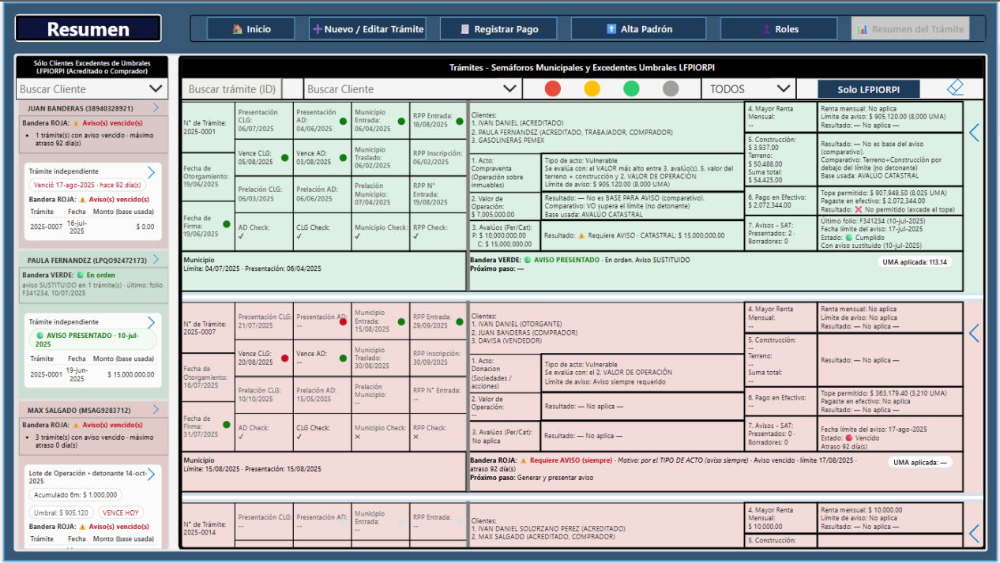
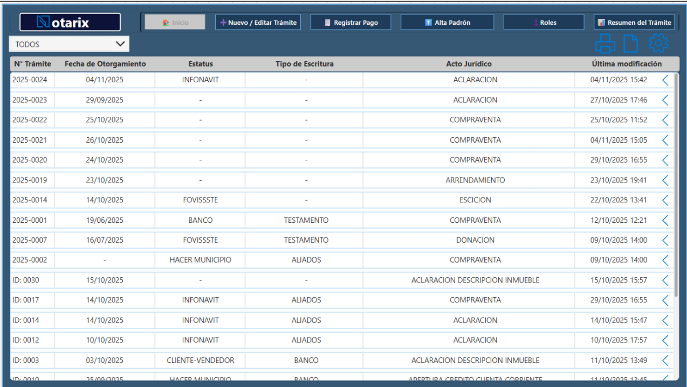
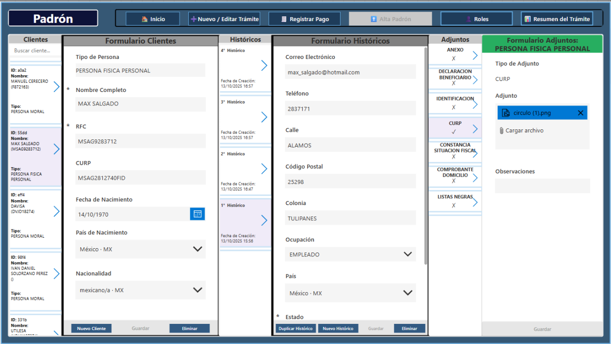
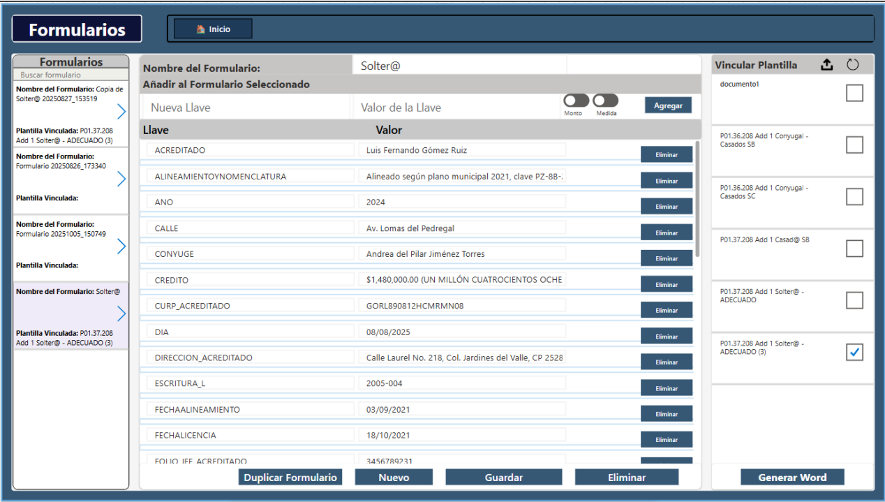

NOTARIX — Plataforma para operación notarial con LFPIORPI
Plataforma centrada en Dataverse para centralizar trámites, aplicar reglas LFPIORPI, gestionar evidencia, dar seguimiento a plazos (semáforos municipales) y automatizar generación de documentos con plantillas Word tokenizadas.
1) Contexto / Problema
La operación notarial estaba fragmentada entre hojas de cálculo y archivos dispersos, elevando el riesgo de incumplir plazos municipales, debilitando el manejo de evidencia y haciendo que el cumplimiento LFPIORPI dependiera de cálculos manuales e interpretación individual.
2) Solución (lo que entregué)
Módulos entregados (core)
- Trámite 360: seguimiento central (clientes, montos, pagos, folios/acuse SAT).
- Automatización LFPIORPI: evaluación de umbrales, banderas y cálculos por políticas.
- Semáforos municipales: plazos configurables (Rojo/Ámbar/Verde) por municipio.
- Expediente digital: evidencia centralizada y vinculada a cada trámite.
- Automatización de documentos: plantillas Word con tokens dinámicos para salidas estandarizadas.
Estilo de entrega
- Despliegue dentro del tenant Microsoft del cliente.
- Diseño “model-first”: tablas normalizadas + catálogos para comportamiento escalable.
- Auditabilidad como restricción de primera clase: evidencia, trazabilidad y salidas controladas.
NOTARIX reduce riesgo de cumplimiento y variabilidad operativa sin aumentar carga manual.
3) Arquitectura
Datos
- Modelo centrado en Dataverse con entidades normalizadas + catálogos (reglas parametrizadas).
- Lógica de cumplimiento soportada por campos estructurados (umbrales, banderas, plazos, punteros a evidencia).
Automatización + Documentos + Reporteo
- Power Automate: orquestación para trazabilidad (avisos, bitácoras, salida documental).
- SharePoint/OneDrive: plantillas + evidencia + vínculos desde registros Dataverse.
- Reporteo: vistas de control operativo y salidas exportables (rellenar específicos).
4) Funciones clave
- Semáforos por municipio con reglas de plazos configurables (por localidad).
- Lógica de acumulación 6 meses (agrupación por RFC + familia de acto, acumulado vs umbral).
- Versionado de UMA (valores parametrizados para cálculos por periodo).
- Control de avisos SAT (folios, sustituciones/cancelaciones, expiraciones).
- Flujo de Borrador → Oficialización (finaliza solo cuando evidencia y datos requeridos están completos).
- Automatización documental por tokens usando plantillas Word configurables por el cliente.
5) Métricas / Escala (objetivo)
Escala
- Usuarios/Cuentas: 2, Notario / Contabilidad
- Trámites/mes: 50
- Pantallas: 13
- Automatizaciones (flujos): 2
Objetivos de cumplimiento
- Tipos de plazos controlados: Municipales y Federales
- Regla de completitud de evidencia: Folio de Aviso en SAT
- Riesgo principal reducido: variación por cálculo manual + evidencia incompleta + plazos vencidos
6) Capturas
Solo las pantallas más fuertes. Estas son las vistas que prueban que NOTARIX es “cumplimiento + operación en un solo lugar”.




7) Siguientes mejoras
- Agregar pruebas de regresión para reglas de cumplimiento (sets versionados + validaciones automatizadas).
- Formalizar ALM (soluciones administradas, variables de entorno, pipelines de despliegue).
- Agregar monitoreo + dashboards de auditoría (drift de reglas, evidencia faltante, plazos por vencer).